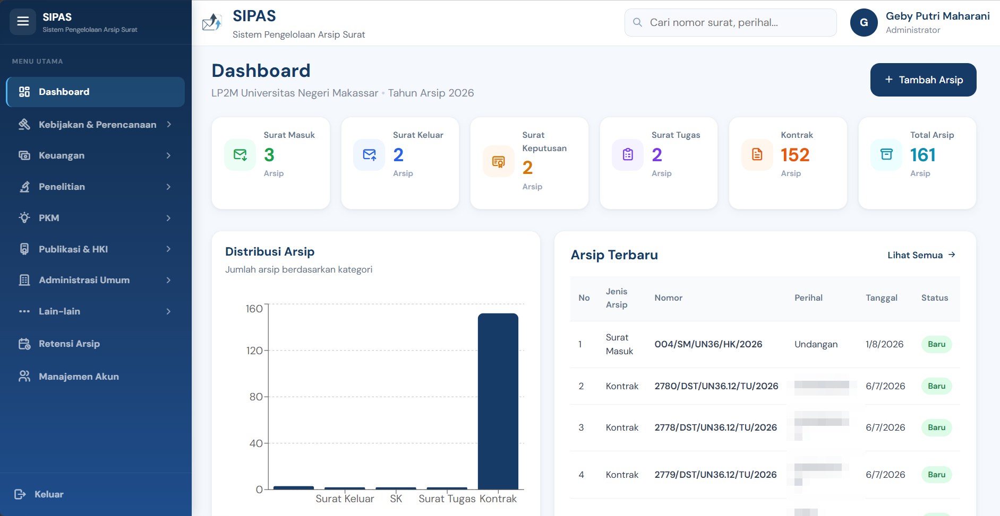
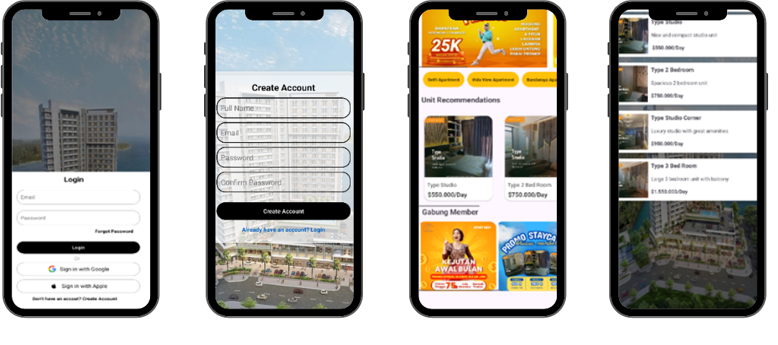
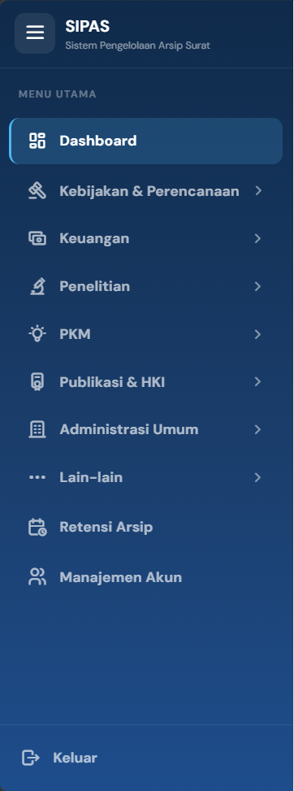
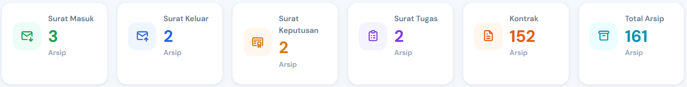

LP2M UNM
Archive Information System
- React
- Laravel
- MySQL
A web-based archive management system to manage incoming/outgoing correspondence, contracts, assignments, decrees, and archive retention.
I build web-based applications and digital solutions with modern technologies, focusing on functional, responsive, and user-focused experiences.
const developer = {
name: "Geby",
role: "Web Programmer",
stack: [
"React.js",
"Laravel",
"Supabase"
]
};02. About Me
I am a Web Programmer with a background in Informatics and Computer Engineering Education, focused on developing web-based applications and digital solutions.
My experience includes building administrative information systems, designing responsive interfaces, and working with modern web technologies to turn ideas and requirements into functional products.
03. Technologies I Work With
I work with a range of modern technologies to build efficient and maintainable web applications.
04. Featured Projects
Here are some of the projects I've worked on, whether during internship, coursework, or personal development.
View All Projects →
Archive Information System
A web-based archive management system to manage incoming/outgoing correspondence, contracts, assignments, decrees, and archive retention.

Mobile Application
An Android application for apartment rental information and management with user-friendly features.
05. Project Case Study
A web-based system for managing institutional documents and archival records.
LP2M UNM is a web-based archival information system (SIPAS) designed to manage institutional documents such as incoming and outgoing correspondence, contracts, assignments, decisions, and archive retention.
LP2M handles documents from many fields at the same time: correspondence, assignment letters, decrees, and contracts, alongside research, community service (PKM), publications and IPR, finance, and general administration. Each type needs consistent handling.

Web Development Intern at LP2M Universitas Negeri Makassar (Jun – Aug 2026), working on both the interface and the data side of the system.

Every document type shares a common structure but differs in category and retention period, so handling each type separately would have meant duplicated logic and inconsistent data.
Modeled archives, categories, and retention rules in a normalized schema, so retention follows from the data model rather than from separate code for each document type.
06. Experience & Activities
A glimpse of my professional journey and activities that have shaped my skills and mindset.
07. Contact
I'm currently open to opportunities in web development and software engineering.
Thank you for reaching out. Your message was delivered successfully and I'll reply as soon as I can.
Send another message